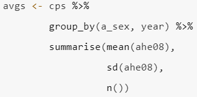
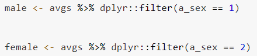
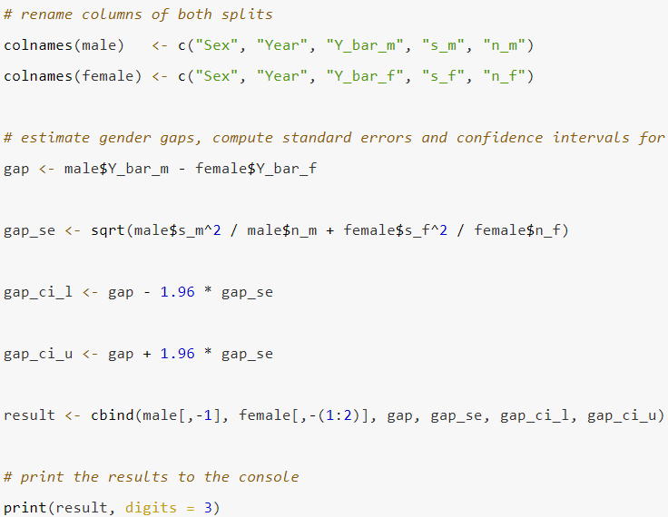
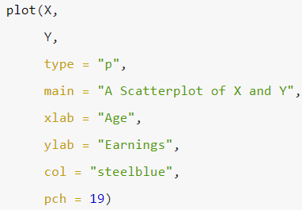
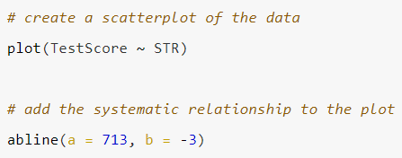
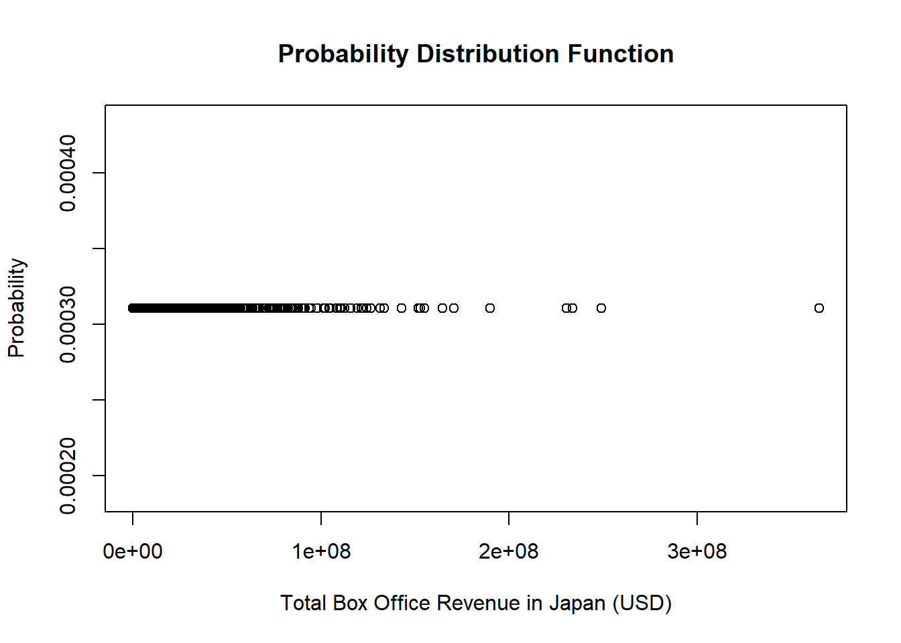
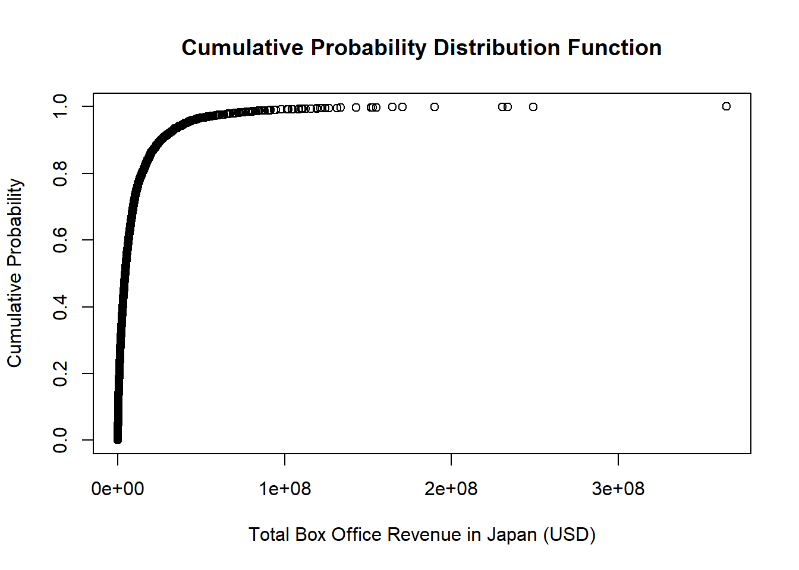
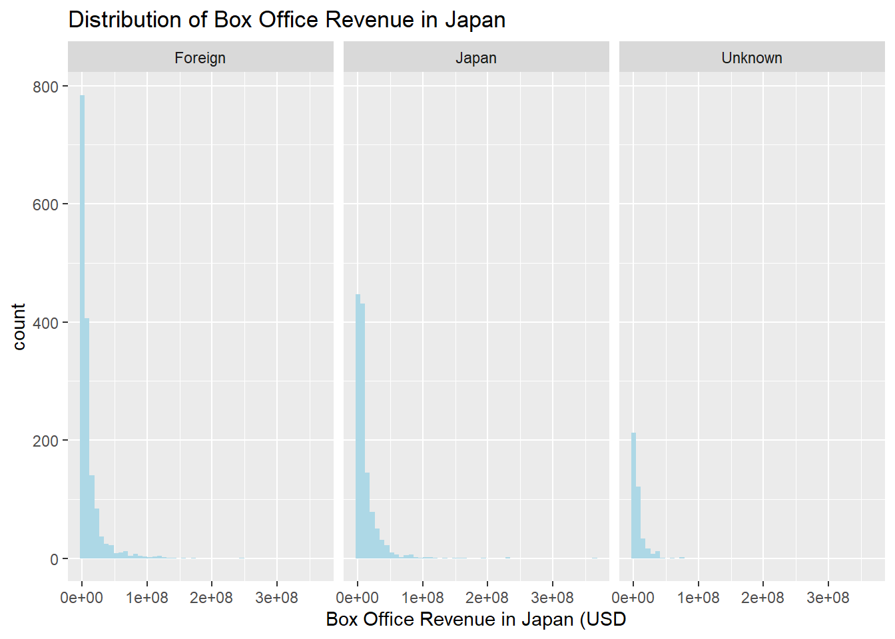

Code
library(tidyverse)
library(dplyr)
knitr::opts_chunk$set(echo = TRUE)Erika Nagai
July 18, 2023
Import data into R and load the dplyr package to perform the following descriptive analysis on the two variables you are working with:
Start by first plotting the probability as well as cumulative density functions for each of your variables as shown in chapter 2. Instead of using sample() to generate a vector of probabilities, designate ‘probability’ to be the observations in your dataset. You may search online for simple ways to generate these plots for you data.
Group data by the two variables of interest to you (and relevance to the phenomenon you are interested in exploring) and obtain mean and standard deviation for at least one of the variables like in the example below. Please also print your results, as they will be important for your final writeup.




Carry out simple regression analysis that employs lm() function to generate results for the analysis

This analysis was done for in-class assignment for DACSS 603 Introduction to Quantitative Analysis at the University of Massachusetts, Amherst.
My analysis is about Japanese moviegoers’ behavior and trend over last 20 years. As this article (https://www.washingtonpost.com/business/avatar-struggles-show-how-japan-is-ditching-hollywood/2022/12/22/09197536-8234-11ed-8738-ed7217de2775_story.html) suggests, recent Hollywood movies are struggling in Japanese market. This might suggest that Japanese people are favoring domestic movies because they are getting more close-minded or Japanese movie industry is getting mature and more attractive for Japanese audience.
My research questions are:
I gathered the data of the movies that were among top 130 in box office revenue in Japan for the last 20 years (2002-2022) by scraping data available on Box Office Mojo by IMDbPro (https://www.boxofficemojo.com/year/2022/?area=JP&grossesOption=totalGrosses&sort=rank&sortDir=asc) * 2022 should be changed to the year you want to refer to.
Besides, I used the dataset (https://www.kaggle.com/datasets/akshaypawar7/millions-of-movies) as of July 14th, 2023 to complement useful information on movies’ language and genres.
Rows: 3219 Columns: 27
── Column specification ────────────────────────────────────────────────────────
Delimiter: ","
chr (13): title, distributor, title_short, genres, original_language, overv...
dbl (11): gross, total_gross, release_year_JP, id, popularity, budget, reve...
lgl (1): re_released
date (2): release_date_JP, release_date_World
ℹ Use `spec()` to retrieve the full column specification for this data.
ℹ Specify the column types or set `show_col_types = FALSE` to quiet this message.spc_tbl_ [3,219 × 27] (S3: spec_tbl_df/tbl_df/tbl/data.frame)
$ title : chr [1:3219] "Down a Dark Hall" "Equals" "Shin Godzilla2019 Re-release" "6 Below: Miracle on the Mountain" ...
$ gross : num [1:3219] 1686 3087 4640 2083 8888 ...
$ total_gross : num [1:3219] 1686 3087 4640 7500 8888 ...
$ distributor : chr [1:3219] "-" "Twin Film" "-" "The Klockworx" ...
$ release_date_JP : Date[1:3219], format: "2019-01-04" "2017-03-04" ...
$ release_year_JP : num [1:3219] 2019 2017 2020 2018 2019 ...
$ title_short : chr [1:3219] "downadarkhall" "equals" "shingodzilla" "6below:miracleonthemountain" ...
$ re_released : logi [1:3219] FALSE FALSE TRUE FALSE FALSE FALSE ...
$ id : num [1:3219] 421792 301875 315011 423087 468213 ...
$ genres : chr [1:3219] "Thriller-Drama-Fantasy-Horror" "Drama-Romance-Science Fiction" "Action-Science Fiction-Horror" "Thriller-Drama" ...
$ original_language : chr [1:3219] "en" "en" "ja" "en" ...
$ overview : chr [1:3219] "Kit a troubled girl is sent to the exclusive Blackwood boarding school where she discovers that only four other"| __truncated__ "A futuristic love story set in a world where emotions have been eradicated." "When a massive gilled monster emerges from the deep and tears through the city the government scrambles to save"| __truncated__ "An adrenaline seeking snowboarder gets lost in a massive winter storm in the back country of the High Sierras w"| __truncated__ ...
$ popularity : num [1:3219] 15.42 9.39 35.4 18.23 5.7 ...
$ production_companies: chr [1:3219] "Nostromo Pictures-Temple Hill Entertainment-Fickle Fish Films" "Scott Free Productions-Infinite Studios-Freedom Media-Route One Entertainment" NA "Dune Entertainment-Sonar Entertainment-Stormchaser Films-Tucker Tooley Entertainment-October Sky Films" ...
$ release_date_World : Date[1:3219], format: "2018-08-01" "2015-07-15" ...
$ budget : num [1:3219] 0.0 1.6e+07 1.5e+07 0.0 0.0 0.0 2.0e+07 0.0 5.0e+07 2.5e+07 ...
$ revenue : num [1:3219] 2707199 2084628 77947607 0 0 ...
$ runtime : num [1:3219] 96 102 120 97 140 103 85 94 86 110 ...
$ status : chr [1:3219] "Released" "Released" "Released" "Released" ...
$ tagline : chr [1:3219] "Welcome to Blackwood. Where lost girls find their way." "Find your equal." "A god incarnate. A city Doomed." "Miracle on the Mountain" ...
$ vote_average : num [1:3219] 5.5 6.1 7.1 5.8 6.83 ...
$ vote_count : num [1:3219] 600 1252 902 322 62 ...
$ credits : chr [1:3219] "AnnaSophia Robb-Uma Thurman-Isabelle Fuhrman-Victoria Moroles-Noah Silver-Taylor Russell-Rosie Day-Rebecca Fron"| __truncated__ "Nicholas Hoult-Kristen Stewart-Guy Pearce-Jacki Weaver-Bel Powley-Claudia Kim-Scott Lawrence-Toby Huss-Kate Lyn"| __truncated__ "Hiroki Hasegawa-Yutaka Takenouchi-Satomi Ishihara-Kengo Kora-Satoru Matsuo-Mikako Ichikawa-Issey Takahashi-Kanj"| __truncated__ "Josh Hartnett-Mira Sorvino-Sarah Dumont-Kale Culley-Jason Cottle-Austin R. Grant-Nathan Stevens-Marty McSorely-"| __truncated__ ...
$ _merge : chr [1:3219] "both" "both" "both" "both" ...
$ date_difference : chr [1:3219] "156 days" "598 days" "1387 days" "282 days" ...
$ region : chr [1:3219] "Foreign" "Foreign" "Japan" "Foreign" ...
$ anime : num [1:3219] 0 0 0 0 0 0 0 0 1 0 ...
- attr(*, "spec")=
.. cols(
.. title = col_character(),
.. gross = col_double(),
.. total_gross = col_double(),
.. distributor = col_character(),
.. release_date_JP = col_date(format = ""),
.. release_year_JP = col_double(),
.. title_short = col_character(),
.. re_released = col_logical(),
.. id = col_double(),
.. genres = col_character(),
.. original_language = col_character(),
.. overview = col_character(),
.. popularity = col_double(),
.. production_companies = col_character(),
.. release_date_World = col_date(format = ""),
.. budget = col_double(),
.. revenue = col_double(),
.. runtime = col_double(),
.. status = col_character(),
.. tagline = col_character(),
.. vote_average = col_double(),
.. vote_count = col_double(),
.. credits = col_character(),
.. `_merge` = col_character(),
.. date_difference = col_character(),
.. region = col_character(),
.. anime = col_double()
.. )
- attr(*, "problems")=<externalptr> This dataset contains 3219 rows (movies) that were among top 148 movies with the highest box office revenues in Japan every year between 2002 and 2022.
It contains basic information about movies such as total gross box office revenue, release date in Japan, original language, genres, and some movies have their tagline as well
Instruction a. Start by first plotting the probability as well as cumulative density functions for each of your variables as shown in chapter 2. Instead of using sample() to generate a vector of probabilities, designate ‘probability’ to be the observations in your dataset. You may search online for simple ways to generate these plots for you data.
The below is a probability of a movie having a specific value. As the probability of a moving having a specific value is quite low (close to 0), the plot looks flat.


Instruction b. Group data by the two variables of interest to you (and relevance to the phenomenon you are interested in exploring) and obtain mean and standard deviation for at least one of the variables like in the example below. Please also print your results, as they will be important for your final writeup.
Min. 1st Qu. Median Mean 3rd Qu. Max.
1686 1389612 4500000 10675179 11323219 364777208 Introduction c. Split both of your variables like illustrated in the example below. You may use ‘greater than’ or ‘less than’ signs to split your data
Min. 1st Qu. Median Mean 3rd Qu. Max.
1686 1082826 3689582 10283637 10375104 249036646 Standard deviation of box office revenue of foreign movies in Japan
Min. 1st Qu. Median Mean 3rd Qu. Max.
4640 2312990 5990738 12345414 13650652 364777208 Instruction d. Rename columns according to the splits you’ve made and obtain difference in means along with standard errors and confidence intervals like so:
The mean of Box Office revenue of domestic movies are bigger than that of foreign movies.
# Difference in means
gap_mean <- mean(df_domestic$total_gross) - mean(df_foreign$total_gross)
gap_se <- sqrt(df_domestic$total_gross/count(df_domestic) + df_foreign$total_gross/count(df_domestic))
gap_ci_l <- gap_mean - 1.96 * gap_se
gap_ci_u <- gap_mean + 1.96 * gap_se
results = cbind(gap_mean, gap_se, gap_ci_l, gap_ci_u)
colnames(results) <- c("gap_mean", "gap_se", "gap_ci_l", "gap_ci_u")
print(results) gap_mean gap_se gap_ci_l gap_ci_u
1 2061777 2.249622 2061773 2061781Instruction e. assign as an independent variable (regressor or X) and which one as a dependent variable (Y) like so:
My independent variable (foreign/domestic) is a discrete variable, so I used histogram instead to show the difference of distribution between foreign movies and domestic movies.

Instruction. Carry out simple regression analysis that employs lm() function to generate results for the analysis a. Generate plot that regresses you X variable on Y. Fit a line through the observations to capture the systematic relationship:
My independent variable is discrete so the linear regression (box office revenue ~ region) used dummy variables.
This regression model basically shows the mean box office revenue by movie regions (unknown, foreign, japan). On average, both Foreign and Japanese movies are likely to make statistically higher box office revenue than movies whose original region is unknown.
Call:
lm(formula = df$total_gross ~ df$region)
Residuals:
Min 1Q Median 3Q Max
-12340774 -9132666 -5883981 869547 352431794
Coefficients:
Estimate Std. Error t value Pr(>|t|)
(Intercept) 7048139 969140 7.273 4.41e-13 ***
df$regionForeign 3235498 1088101 2.974 0.00297 **
df$regionJapan 5297275 1115817 4.747 2.15e-06 ***
---
Signif. codes: 0 '***' 0.001 '**' 0.01 '*' 0.05 '.' 0.1 ' ' 1
Residual standard error: 19550000 on 3216 degrees of freedom
Multiple R-squared: 0.007332, Adjusted R-squared: 0.006715
F-statistic: 11.88 on 2 and 3216 DF, p-value: 7.254e-06Since my independent variable is NOT continuous, it is difficult to plot the regression model. Thus, I prepared the boxplot graph that show the difference in box offixe revenue depending on the regional origin of the movies (Unknown, Foreign, Japan)
---
title: "Class Project 1"
author: "Erika Nagai"
desription: "First iteration of the class project"
date: "07/18/2023"
format:
html:
toc: true
code-fold: true
code-copy: true
code-tools: true
categories:
- final project
- Erika Nagai
- dplyr
---
```{r}
#| label: setup
#| warning: false
library(tidyverse)
library(dplyr)
knitr::opts_chunk$set(echo = TRUE)
```
## Instructions
1. Import data into R and load the `dplyr` package to perform the following descriptive analysis on the two variables you are working with:
i) Start by first [plotting]{.underline} the probability as well as cumulative density functions for each of your variables as shown in chapter 2. Instead of using sample() to generate a vector of probabilities, designate ‘probability’ to be the observations in your dataset. You may search online for simple ways to generate these plots for you data.
ii) Group data by the two variables of interest to you (and relevance to the phenomenon you are interested in exploring) and obtain mean and standard deviation for at least one of the variables like in the example below. Please also print your results, as they will be important for your final writeup.
{fig-align="center"}
iii) Split both of your variables like illustrated in the example below. You may use ‘greater than’ or ‘less than’ signs to split your data
{fig-align="center"}
iv) Rename columns according to the splits you’ve made and obtain difference in means along with standard errors and confidence intervals like so:
{fig-align="center"}
v) Now generate a plot by first designating X and Y according to the variable you would assign as an independent variable (regressor or X) and which one as a dependent variable (Y) like so:
{fig-align="center"}
2. Carry out simple regression analysis that employs lm() function to generate results for the analysis
i) Generate plot that regresses you X variable on Y. Fit a line through the observations to capture the systematic relationship:
{fig-align="center"}
## Overview:
This analysis was done for in-class assignment for DACSS 603 Introduction to Quantitative Analysis at the University of Massachusetts, Amherst.
My analysis is about Japanese moviegoers' behavior and trend over last 20 years. As this article (https://www.washingtonpost.com/business/avatar-struggles-show-how-japan-is-ditching-hollywood/2022/12/22/09197536-8234-11ed-8738-ed7217de2775_story.html) suggests, recent Hollywood movies are struggling in Japanese market. This might suggest that Japanese people are favoring domestic movies because they are getting more close-minded or Japanese movie industry is getting mature and more attractive for Japanese audience.
My research questions are:
1. How has Japanese moviegoers' behavior changed over 20 years?
2. What kind of movies attract Japanese movies?
## Dataset
I gathered the data of the movies that were among top 130 in box office revenue in Japan for the last 20 years (2002-2022) by scraping data available on Box Office Mojo by IMDbPro (https://www.boxofficemojo.com/year/2022/?area=JP&grossesOption=totalGrosses&sort=rank&sortDir=asc) \* 2022 should be changed to the year you want to refer to.
Besides, I used the dataset (https://www.kaggle.com/datasets/akshaypawar7/millions-of-movies) as of July 14th, 2023 to complement useful information on movies' language and genres.
```{r}
# load packages
library(dplyr)
library(ggplot2)
#install.packages("tidyverse")
library(tidyverse)
```
```{r}
# Read in data
df <- read_csv("data_ErikaNagai/movies_update.csv")
df <- df %>% arrange(total_gross)
str(df)
```
## EDA (1st Homework)
This dataset contains 3219 rows (movies) that were among top 148 movies with the highest box office revenues in Japan every year between 2002 and 2022.
It contains basic information about movies such as total gross box office revenue, release date in Japan, original language, genres, and some movies have their tagline as well
**Instruction a**. Start by first plotting the probability as well as cumulative density functions for each of your variables as shown in chapter 2. Instead of using sample() to generate a vector of probabilities, designate 'probability' to be the observations in your dataset. You may search online for simple ways to generate these plots for you data.
The below is a probability of a movie having a specific value. As the probability of a moving having a specific value is quite low (close to 0), the plot looks flat.
```{r}
# probability density of Box Office revenue in Japan
probability <- rep(1/3219, 3219)
plot(x = df$total_gross,
y = probability,
main = 'Probability Distribution Function',
xlab = 'Total Box Office Revenue in Japan (USD)',
ylab = 'Probability')
```
```{r}
cum_probability <- cumsum(probability)
plot(x = df$total_gross,
y = cum_probability,
main = 'Cumulative Probability Distribution Function',
xlab = 'Total Box Office Revenue in Japan (USD)',
ylab = 'Cumulative Probability')
```
**Instruction b**. Group data by the two variables of interest to you (and relevance to the phenomenon you are interested in exploring) and obtain mean and standard deviation for at least one of the variables like in the example below. Please also print your results, as they will be important for your final writeup.
```{r}
print(summary(df$total_gross))
```
```{r}
print(sd(df$total_gross))
```
**Introduction c**. Split both of your variables like illustrated in the example below. You may use 'greater than' or 'less than' signs to split your data
## Statistics description of box office revenue of **foreign movies in Japan**
```{r}
df_foreign <- df %>%
filter(region == "Foreign")
summary(df_foreign$total_gross)
```
Standard deviation of box office revenue of foreign movies in Japan
```{r}
sd(df_foreign$total_gross)
```
## Statistics description of box office revenue of **domestic movies in Japan**
```{r}
df_domestic <- df %>%
filter(region == "Japan")
summary(df_domestic$total_gross)
```
```{r}
sd(df_domestic$total_gross)
```
**Instruction d.** Rename columns according to the splits you've made and obtain difference in means along with standard errors and confidence intervals like so:
The mean of Box Office revenue of domestic movies are bigger than that of foreign movies.
```{r}
# Difference in means
gap_mean <- mean(df_domestic$total_gross) - mean(df_foreign$total_gross)
gap_se <- sqrt(df_domestic$total_gross/count(df_domestic) + df_foreign$total_gross/count(df_domestic))
gap_ci_l <- gap_mean - 1.96 * gap_se
gap_ci_u <- gap_mean + 1.96 * gap_se
results = cbind(gap_mean, gap_se, gap_ci_l, gap_ci_u)
colnames(results) <- c("gap_mean", "gap_se", "gap_ci_l", "gap_ci_u")
print(results)
```
**Instruction e.** assign as an independent variable (regressor or X) and which one as a dependent variable (Y) like so:
My independent variable (foreign/domestic) is a discrete variable, so I used histogram instead to show the difference of distribution between foreign movies and domestic movies.
```{r}
df %>%
ggplot(aes(x = total_gross)) +
geom_histogram(bins=50, fill='lightblue') +
facet_wrap(~region) +
labs(title="Distribution of Box Office Revenue in Japan",
x = "Box Office Revenue in Japan (USD")
```
**Instruction.** Carry out simple regression analysis that employs lm() function to generate results for the analysis a. Generate plot that regresses you X variable on Y. Fit a line through the observations to capture the systematic relationship:
My independent variable is discrete so the linear regression (box office revenue \~ region) used dummy variables.
This regression model basically shows the mean box office revenue by movie regions (unknown, foreign, japan). On average, both Foreign and Japanese movies are likely to make statistically higher box office revenue than movies whose original region is unknown.
```{r}
df$region <- factor(df$region, levels=c("Unknown", "Foreign", "Japan"))
model <- lm(df$total_gross~ df$region)
summary(model)
```
Since my independent variable is NOT continuous, it is difficult to plot the regression model. Thus, I prepared the boxplot graph that show the difference in box offixe revenue depending on the regional origin of the movies (Unknown, Foreign, Japan)
```{r}
plot(df$total_gross ~ df$region)
```